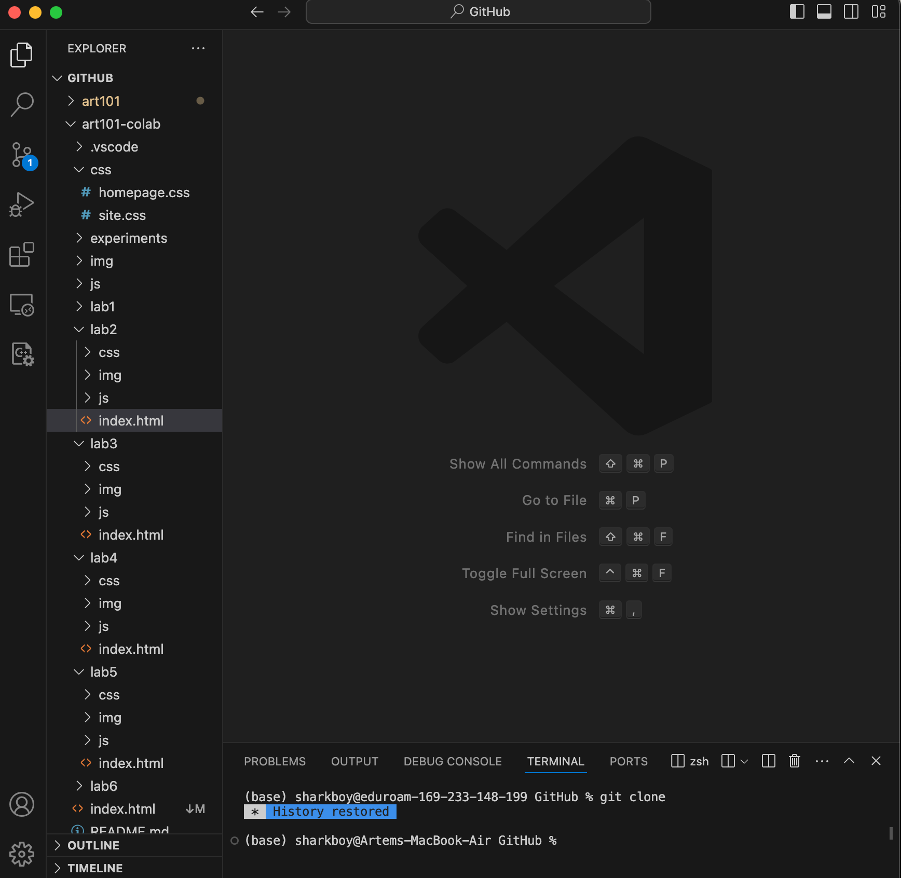

Lab 3 - Subject/Topic
Challenge
In this lab we are to create and organize a local file structure for this and future web development projects. We are also to develop a personal homepage with HTML and CSS, and successfully upload the content to a server.
Problems
During the lab, we encountered problems with organizing file structures linking images in HTML. We solved them by experimenting with different relative paths until the images displayed correctly. We also had a problem in figuring out the time when we were both available to work on this.
Reflection
This assignment helped us get a grasp on the basics of web development. The work was challenging enough to feel rewarding. It also solidified our understanding of file hierarchy and HTML/CSS.
Results
These are the files that we made:
